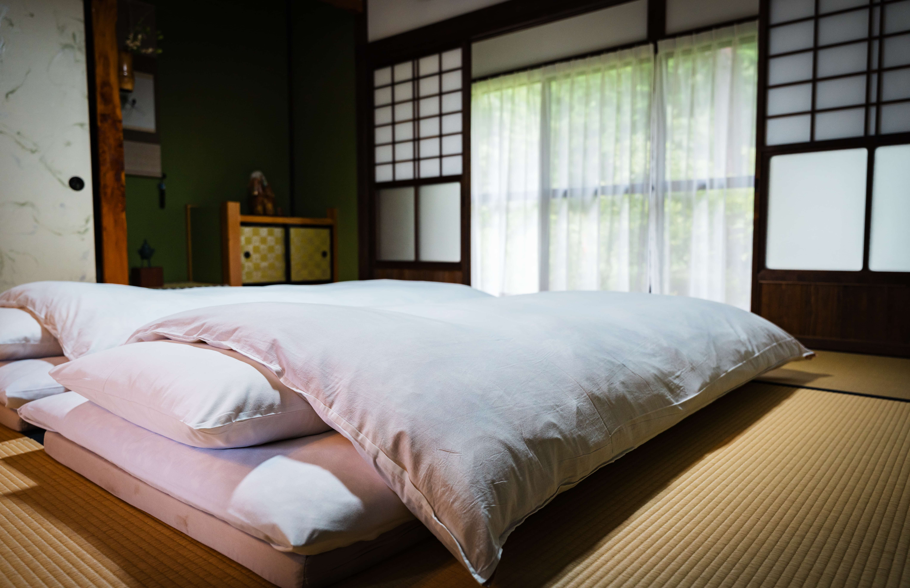
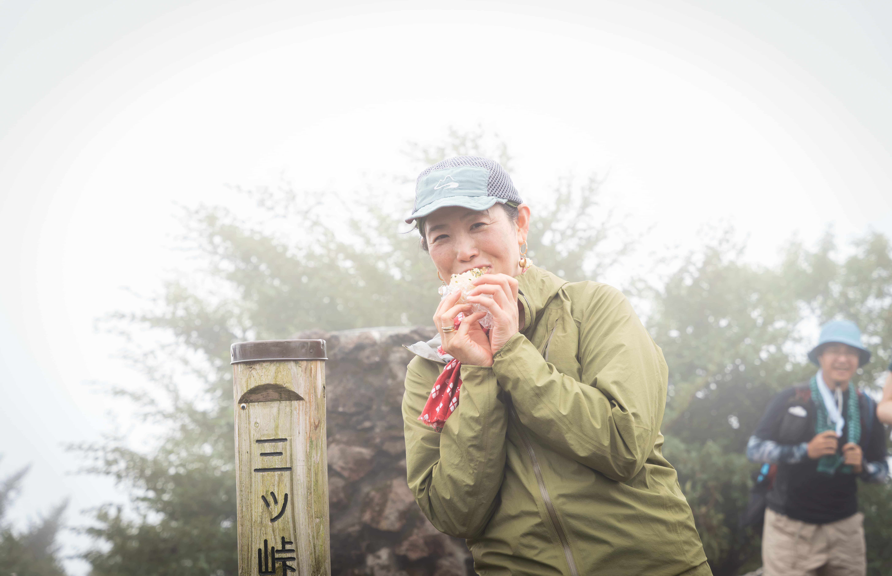
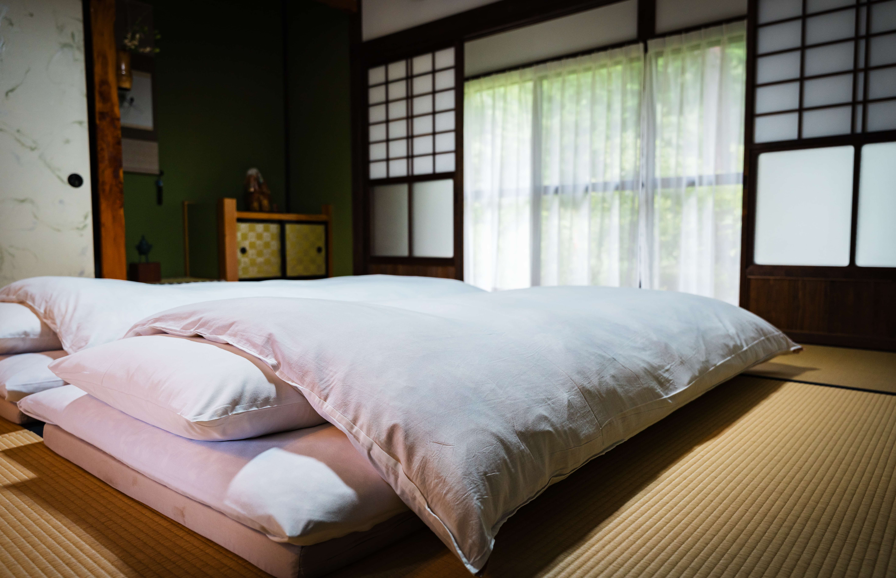
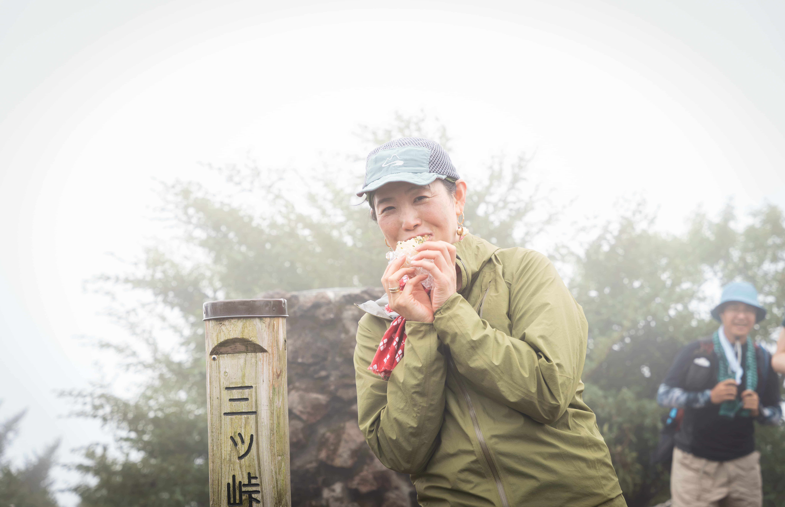
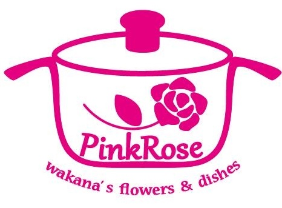

山梨県西桂町 ｜ 令和7年度 秋開催
三ツ峠から愛でる絶景富士！
クマガイソウを守り「富士山おむすび」を満喫する２泊３日の旅
世界が注目する「アドベンチャーツーリズム」を
富士山の麓で！
標高1,785mの三ツ峠山頂から望む富士山の絶景、
絶滅危惧種クマガイソウの保護活動への参加、そして地元の食材で作る「富士山おむすび」体験
この土地ならではの自然と文化を守り育てる、
サステナブルな旅を令和7年10月より開始いたします。
地域の挑戦：体験でつなぐ
本プログラムは、アドベンチャーツーリズム（AT）の国際基準である「アクティビティ」「自然」「文化体験」の3要素を融合させ、旅行者が「責任ある観光（レスポンシブル・ツーリズム）」を実践できる、高付加価値なサステナブル・ツーリズムです。
オーバーツーリズムという課題に直面する富士山エリアにおいて、観光客を魅力的な周辺地域へ誘う「エリア内分散化」を実現し、観光の質的転換を目指します。
- 期間：2025年10月〜12月
- 定員：各回1組あたり4名様まで
- 料金：1組180,000円（税込）
※三ツ峠登山ガイド・クマガイソウ保護活動・富士山おむすび体験・宿泊含む
 



スケジュール
集合場所
三ツ峠の宿
1日目：地域の自然と文化に触れる
- 13：30 ツアー概要のブリーフィング
- 14：00 クマガイソウ保護活動に関する学習
- 16：30 地域の人々との交流バーベキュー
2日目：登山とバーベキュー
- 7：00 富士山おむすび作り体験
- ・宿オーナーによる指導
- ・今回開発したレシピでのおむすび完成
- 8：00 ガイドとともに宿を出発
- 9：00 達磨石Pからトレッキング開始
- 12：00 山頂到着、富士山おむすびで昼食
- 15：00 下山完了、宿で着替え
- 16：00 グリーンセンターで温泉入浴
- 18：00 地元食材を使った夕食
3日目：地域探求
- 9：30 西桂町でのコンテンツ体験（どちらかを選択）
- ・槙田商店での工場見学
- ・地元工房でのガラス吹き体験
- 12：00 解散
*1 天候により登山コースを変更する場合があります。
※2 登山に適した服装・装備をご持参ください。
※3 料金に含まれていないお買い物は個人負担となります。
プログラムで体験できること
1. 登山ガイドと挑む三ツ峠登山
・登山ガイド先導のもと、三ツ峠山頂（標高1,785m）を目指すトレッキング
・自身の体力と向き合い、困難を乗り越えた先に待つ達成感
・富士山の絶景を独占できる特別な時間
2. 地域の宝「クマガイソウ」との出会い
・絶滅危惧種クマガイソウと西桂町の関係を学習
・クマガイソウガイドから生態と保護について学習
・地域の自然保護の重要性を深く理解
3. 「ご縁を結ぶ 富士山おむすび」作り体験
・料理家 守屋若奈氏監修による特別レシピ
・山梨の誇る「甲州ブランド食材」を使用
・食べ方で楽しむストーリー体験
※詳しくは「富士山おむすび」のセクションをご覧ください。
4. サステナブルな旅の実践
・ツアー収益の一部を保全活動に寄付
・地域の課題解決に直接貢献
・西桂町のファンになり、継続的な関わりを
※参加者は単なる「消費者」ではなく、地域の「共感者」となることを目指します。
特別メニュー：「ご縁を結ぶ 富士山おむすび」
料理家 守屋若奈氏 監修
プロフィール
料理研究家／食育講師／商品開発アドバイザー
コンセプト：「ご縁を結び、富士を登る」
一つのおむすびで富士登山のストーリーを味わう、ここでしか体験できない特別なメニューです。
食べ方で楽しむ3つのストーリー
- 一口目：麓の大地に縁を結ぶ（甲州味噌ご飯）
- 二口目：森林帯で力を授かる（選べる具材）
- 三口目：山頂到達（粉チーズと青海苔の雪化粧）
選べる2種の具材
- 甲州地どりバージョン（高タンパク、スタミナ）
- 甲州牛しぐれ煮バージョン
※山梨県産の食材にこだわった特別レシピです。
特徴
- ・山梨の誇る「甲州ブランド食材」を使用
- ・食べる順番で富士登山を体験
- ・仲間と一緒に作ることで思い出作りに
- ・見た目も富士山を表現した特別デザイン
料金
1組 180,000円（税込）
- ・料金に含まれるもの：
- - 宿泊費（2泊）
- - 全体験料（登山ガイド、地場産業体験、富士山おむすび作り等）
- - クマガイソウ保護活動への寄付
- - 食事代（朝食２食 昼食1食 夕食2食）
- - イベント保険
含まれないもの
- 現地までの往復交通費
- 個人的な飲食・お土産代
推奨持ち物
- 歩きやすい靴・防寒具（秋季）
- 身分証明書
ツアー開催日程（令和7年）
※予約状況・コンテンツ実施状況により、開催できない場合がございます。ご了承ください。
前半（10月〜11月）
10月
- 10/29(水)–10/31(金)
- 10/31(金)–11/2(日)
11月
- 11/2(日)–4(火)
- 11/7(金)–9(日)
- 11/9(日)–11(火)
- 11/11(火)–13(木)
- 11/13(木)–15(土)
- 11/15(土)–17(月)
- 11/17(月)–19(水)
- 11/19(水)–21(金)
- 11/21(金)–23(日)
- 11/23(日)–25(火)
- 11/25(火)–27(木)
- 11/27(木)–29(土)
- 11/29(土)–12/1(月)
後半（12月）
12月
- 12/1(月)–3(水)
- 12/3(水)–5(金)
- 12/5(金)–7(日)
- 12/7(日)–9(火)
- 12/9(火)–11(木)
- 12/11(木)–13(土)
- 12/13(土)–15(月)
- 12/15(月)–17(水)
- 12/17(水)–19(金)
- 12/19(金)–21(日)
「仕事で遊ぶ、世界中にたくさんのワクワクを」を企業理念に掲げ、不動産事業を基盤としながら、宿泊、イベント、観光へと事業を多角的に展開しています。不動産という「場」の提供に留まらず、そこでの「暮らし」や「体験」といった無形の価値を創造することを使命としています。
— 株式会社VivitBase
よくある質問
アドベンチャーツーリズム（AT）とは何ですか？
ATは、土地の自然や文化に深く分け入り、自己変革を促す新しい旅のスタイルです。「アクティビティ」「自然」「文化体験」の3要素を組み合わせ、地域の持続可能な発展に貢献します。
三ツ峠登山の難易度はどの程度ですか？
標高1,785mの三ツ峠は、初級〜中級者向けの山です。登山ガイドが同行し、ペース配分や休憩を適切に取りながら安全に登頂を目指します。
クマガイソウの保護活動とは具体的にどのような内容ですか？
専門家の指導のもと、クマガイソウの生態や生息環境について学習します。また、保護活動の歴史や意義について学び、ツアー収益の一部が保全活動に寄付されます。
ツアー収益の一部は何に使われますか？
クマガイソウの保護活動や、西桂町の自然環境保全活動に活用されます。参加者の方々の旅行代金が、直接地域の課題解決に貢献する仕組みとなっています。
「富士山おむすび」とは何ですか？
料理家 守屋若奈氏が考案した特別なおむすびです。甲州味噌ご飯を使用し、甲州地どり・甲州牛・甲州ワインビーフから選べる具材を包み、粉チーズと青海苔で富士山の雪化粧を表現。食べる順番に意味があり、麓から頂上までの登頂ストーリーを味わえる体験型の食事です。
アクセス（当日の集合場所）
三ツ峠の宿
〒403-0021 山梨県南都留郡西桂町下暮地２９２７−３
電車でのアクセス
- • 富士急行線「三ツ峠駅」より徒歩約5分
お車でのアクセス
- • 中央自動車道「都留IC」より約20分
- • 駐車場完備（無料）
推進体制（企画・実施）
事業主体
株式会社VivitBase
企画開発
YAOROKU & COMPANY株式会社
販売・プロモーション
旅行実施：株式会社Japanticket
東京都知事登録旅行業第2-8276号
国内旅行業務取扱管理者 伊藤雄次郎
TEL:03-6912-2775